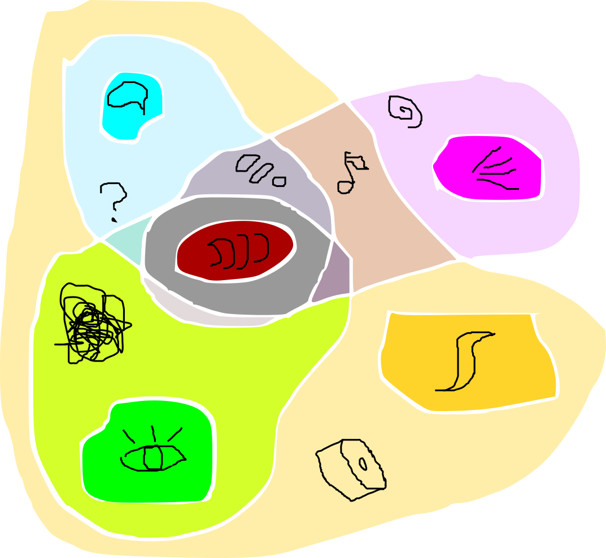

Electronic Entomology is a study that explores the nuances of behaviors and characteristics of solar-powered electronic insects. This project explore electronic insects as a cohabitant and satellite senses to experience our surroundings in a new way. The web archive functions for the exploration of classifications of these insects and materials for the visitors to build them on their own.
Electronic Entomology
Project website: http://electronicentomology.com
Still Images

Orchid Danny
2" x 3" x 3"
Integrated Circuits, semiconductor components, solar cells, wires, piezo disk
Solar chirping insect called Orchid Danny accumulating spiders webs as it lives in my living space. It chirps once in a while with pitches that depend on the amount of light it gets.
{kind=link}
two PCB insects
2" x 1" x 3"
Integrated Circuits, semiconductor components, solar cells, wires, printed circuit board, piezo disks
Solar chirping insects build on printed circuit boards.
{kind=link}
Furin Gate
3" x 3" x 4"
Integrated Circuits, semiconductor components, solar cells, wires, piezo disk
Solar chirping insect called Furin Gate on a window sill. It has an organ that detects wind movement that it responds with chirps.
{kind=link}
Electronic Entomology - workshop teaching material
3" x 3"
Custom printed circuit board
Experimental circuit board design specifically for workshops and classrooms. Many connections pads are enlarged and accessible for the student to experiment with different components and connections to explore different sounds.
{kind=link}
Electronic Entomology - image of the web archive
Ongoing archival website for the Electronic Entomology project. This site contains detail classifications of each insect and resources for people to learn and build them themselves.
website: electronicentomology.com